Данное руководство наполовину состоит из переведенных мною инструкций c английского языка и предполагает установку на ПК официального образа macOS Sierra с магазина AppStore при использовании программ сайта tonymackx86.com.
Помимо текстового перевода, я добавил свои инструкции по подготовке компьютера и решению возможных проблем, с которыми может столкнуться любой начинающий "хакинтошник". То есть информацию, которая как правило не приводятся в других статьях на эту тему, и которую новичкам приходится долго искать самостоятельно. В руководство также добавлены мои советы, примечания и ссылки на дополнительную информацию.
О сложностях хакинтоша
С помощью моего руководства получится установить macOS Sierra на большинство современных ПК на базе процессоров intel. Однако сама по себе настройка хакинтоша сопряжена со множеством проблем, решение всех из которых это руководство охватить не в состоянии: macOS расчитана на фирменное оборудование Apple, тогда как у пользователей компьютеров, настраивающих macOS на ПК, конфигурация систем разнится между собой. Поэтому проблемы возникают у всех разные. Исходя из этого, искать решения возникшей проблемы придется в сети, желательно на зарубежных специализированных форумах, таких как упомянутый tonymackx86. Либо пытать счастья на applelife.ru, если уж совсем не "дружите" с английским. Весьма вероятно, что человек с аналогичной проблемой уже обращался за помощью и решил ее определенным образом.
Планы по обновлению
Работа не является завершенной, есть еще то, о чем стоит рассказать.
В будущем я планирую добавить:
Настройку сервисов AppStore и iCloud (следуя текущей версии руководства, они вряд ли заработают)
Более подробное руководство по заводу встроенного звука - одной из главных сложностей при настройке macOS на ПК
Решение еще нескольких проблем, с которыми столкнулся я лично
Возможно, некоторые инструкции и информация по тонкой настройке Clover и внутреннего оборудования
Загрузите последние версии UniBeast и MultiBeast с раздела Downloads
Сделайте резервную копию всех важных данных
Касательно параметров системы:
Поддерживает ли система (материнская плата) UEFI, либо использует BIOS?
Поколение процессора intel Core. Это может быть Sandy Bridge, Ivy Bridge, Haswell или Skylake. Возможна работа также и чуть более старых процессоров
Аудиокодек материнской платы, если используете встроенное аудио. На системах с чипсетом intel должен быть один из кодеков Realtek ALC
MacOS рекомендуется устанавливать на отдельный жесткий диск, на котором не установлена основная ОС, во избежание ошибок пользователя, в результате которых может быть стерт загрузочный раздел основной ОС или произойти другие неприятности. Также это поможет избежать возможных ошибок при установке macOS. Жесткий диск при этом будет полностью отформатирован.
Далее я также разберу способ установки macOS Sierra на отдельно подготовленный раздел неосновного жесткого диска, однако такой способ займет больше времени и может быть проблемным.
На той же вкладке указан аудиокодек материнской платы
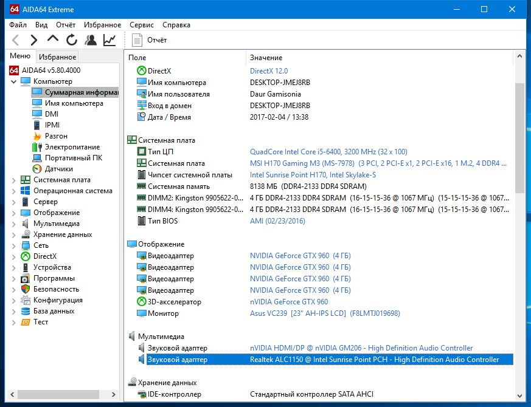
Название сетевой карты в разделе Сеть > Сеть PCI/PnP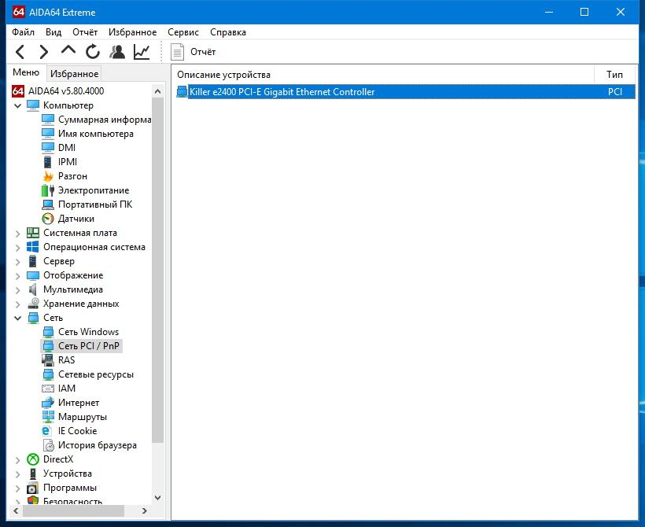
Моя встроенная сетевая карта - Killer E2400 (Atheros)
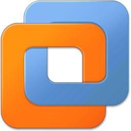
Шаг 2: Настройка VMWare
Перед тем, как начать
Для того, чтобы установить официальный образ macOS Sierra на ПК, потребуется для начала загрузить его через цифровой магазин AppStore. Это можно сделать на ОС Windows с помощью "виртуальных машин" - программ, которые эмулируют работу одной ОС внутри другой. В данном руководстве будет рассматриваться бесплатная версия VMWare Workstation Player, возможностей которой вполне хватит для описанных в данном руководстве действий. Запущенная на виртуальной машине macOS отображается как обычная программа для Windows - в окне или в режиме полного экрана.
Для установки macOS Sierra в качестве виртуальной ОС понадобиться скачать следующие файлы:
Запустите win-install.cmd от имени администратора и пропатчите VMWare Workstation Player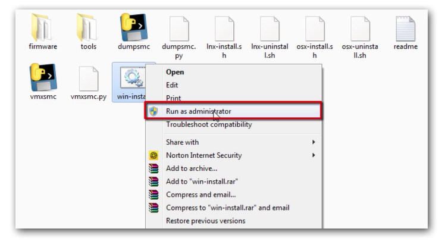
Откройте Workstation Player и нажмите Create new virtual machine, затем выберите Guest OS: Apple Mac OS X и Version: Mac OS X 10.11 или 10.12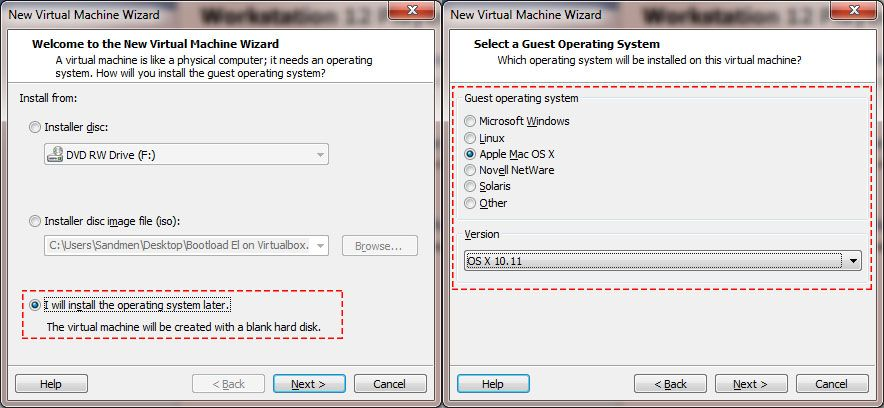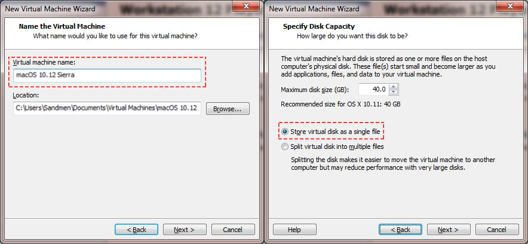
Выберите Edit Virtual Machine Setting, затем Hard Disk (SATA) 40 GB и удалите виртуальный диск нажав на Remove
Следуйте цепочке действий: Add > Hard Disk > SATA, после этого выберите Use an Existing Virtual Disk
Найдите и откройте загруженный образ macOS Sierra ( ...\macOS Sierra.vmdk )
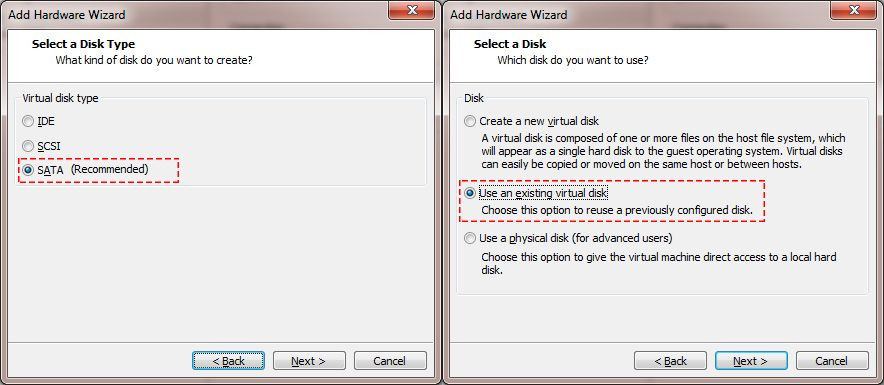
Рекомендую выделить 4Гб оперативной памяти для нормальной работы macOS Sierra на виртуальной машине. Если у Вас 4-ядерный процессор, выделите ей 2 ядра
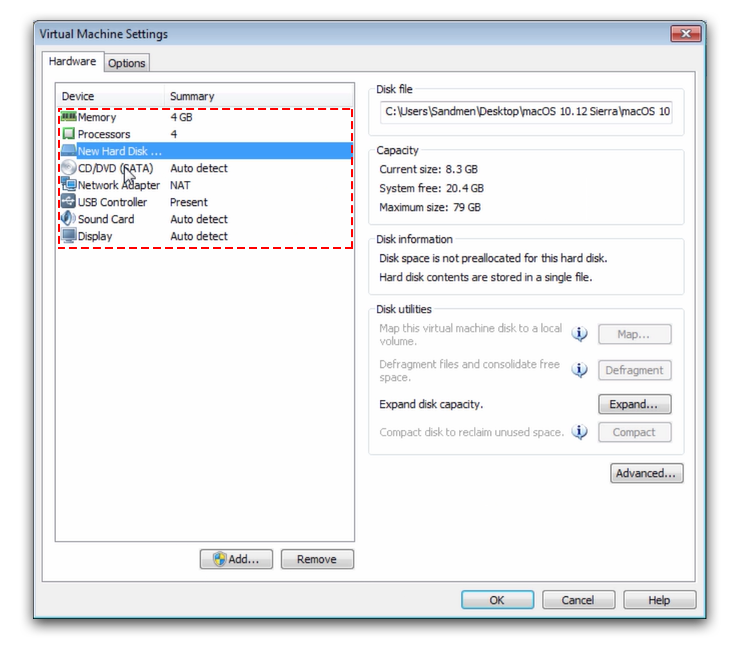
Откройте *.VMX файл с помощью блокнота
Скопируйте и вставьте последней строкою фрагмент кода: smc.version ="0"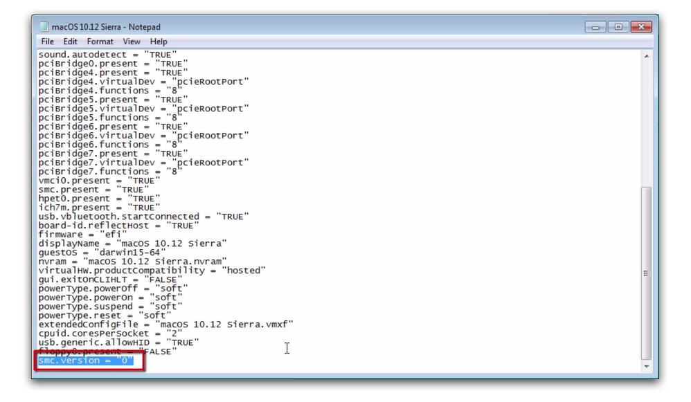
Запустите Workstation Player и установите macOS Sierra
Смонтируйте образ VM Tool.iso, следуя цепочке действий: Workstation Player > Removable Devices > CD/DVD > Settings и установите… Либо загрузите образ WMware Tool прямо из браузера Safari
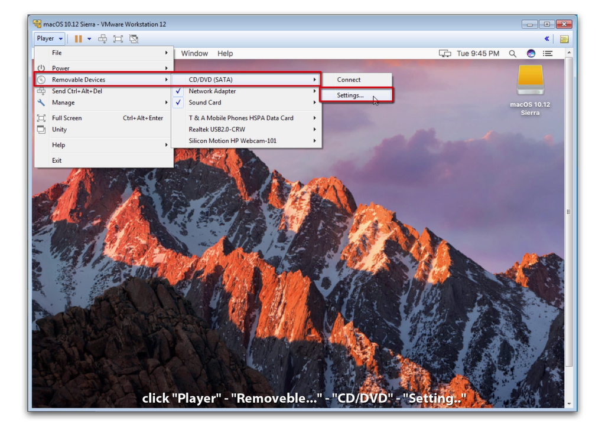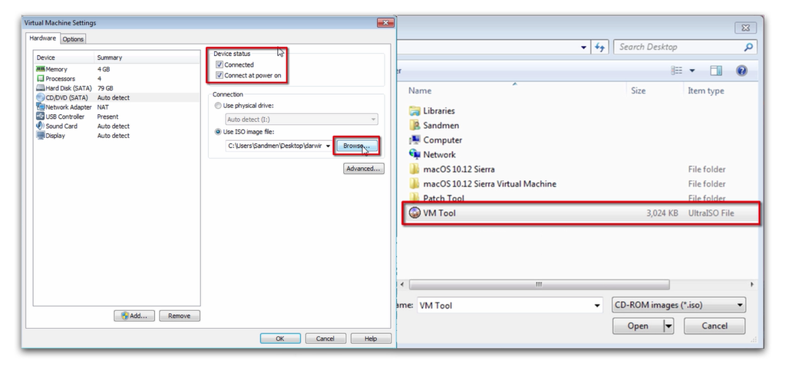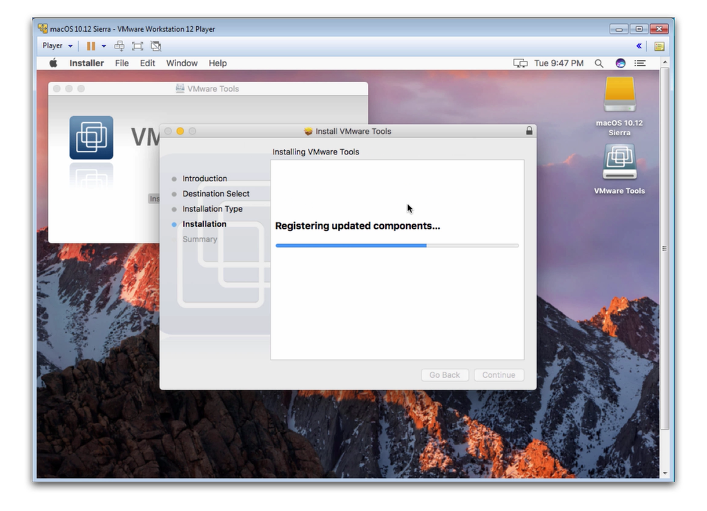
Готово! macOS Sierra работает в среде VMware на Windows :)
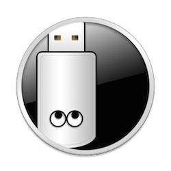
Шаг 3: Создание загрузочного USB
Откройте Mac AppStore
Найдите и загрузите образ macOS Sierra
Приложение установки Install macOS Sierra появится в списке доступных программ.
Сделайте глубокий вдох. Это руководство довольно простое, но из-за спешки можно упустить важные детали!
Нажимайте Continue, Continue, Continue, Agree, пока не дойдете до Destination Select
На этапе Destination Select выберите USB-накопитель и нажмите Continue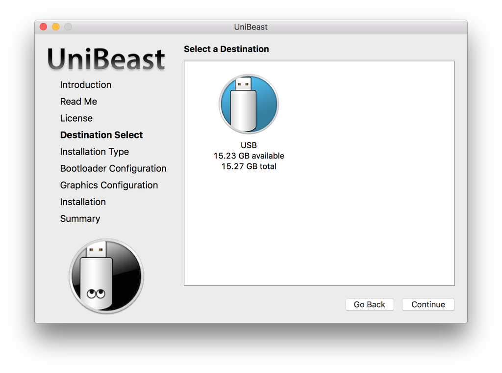
На экране Select OS Installation выберите Sierra и нажмите Continue
На экране Bootloader Options выберите UEFI Boot Mode или Legacy Boot Mode. UEFI Boot Mode рекомендуется для 7/8/9/100 серии чипсетов Intel и для всех поддерживающих UEFI материнских плат. Legacy Boot Mode рекомендуется для 5/6 серий чипсетов и всех систем на основе BIOS
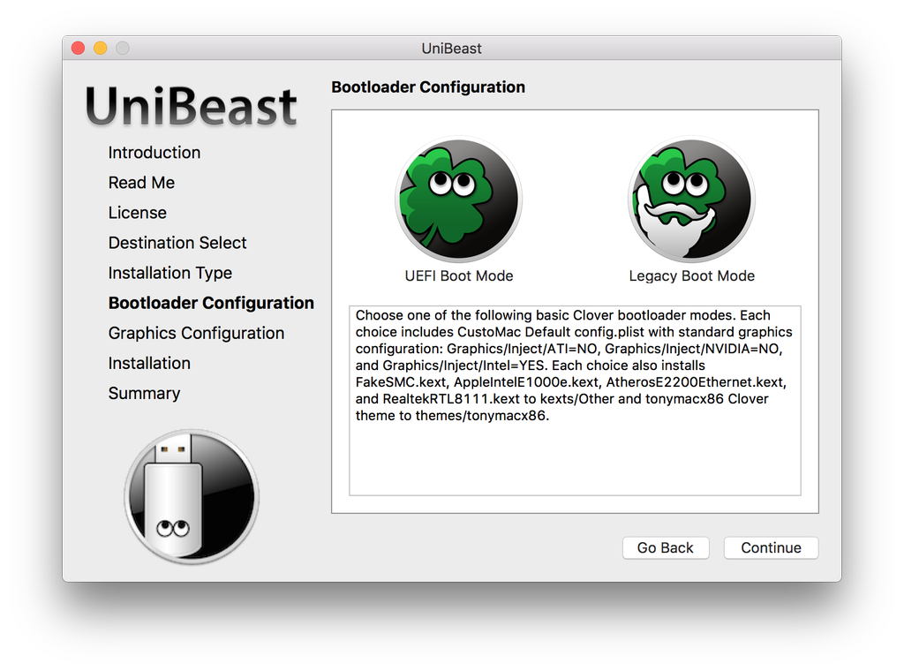
(Опционально) На экране Graphics Configuration список опций для старых видеокарт и встроенных решений. Ознакомьтесь с их описанием
Проверьте параметры установки, затем нажмите Continue и Install.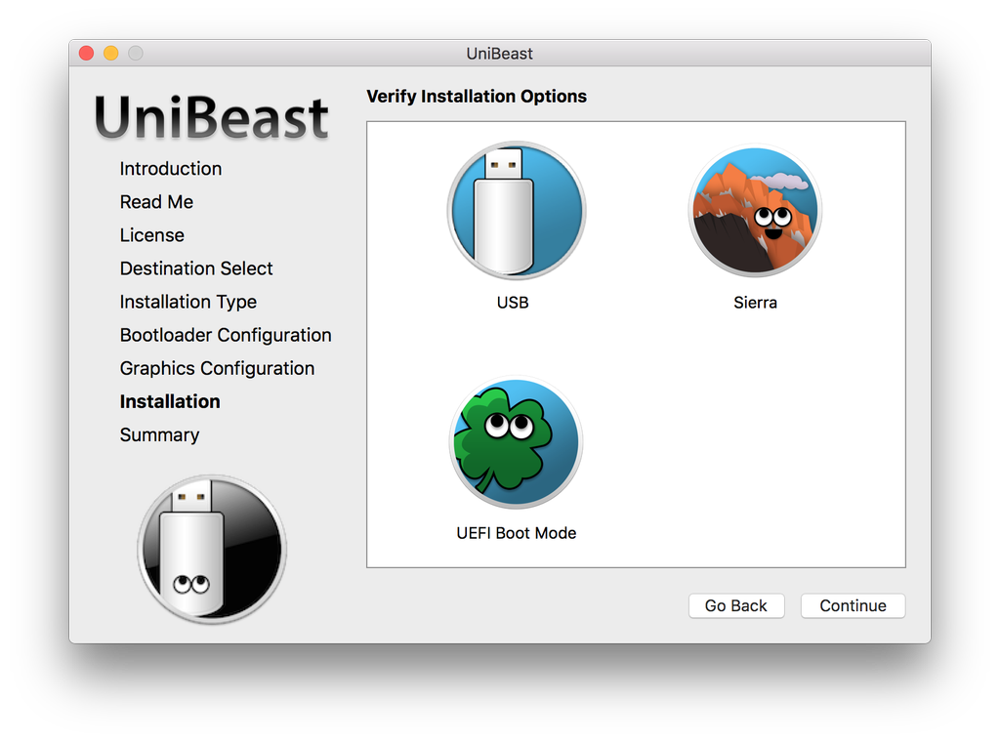
UniBeast создаст загрузочный USB, используя лучший на данный момент загрузчик - Clover. Процесс может занять до 10 минут в зависимости от системы и скорости накопителя. Постарайтесь не прерывать этот процесс. Также не рекомендую выходить из виртуальной машины, в случае, если установка происходит через нее.
Переместите архив с MultiBeast на созданный загрузочный накопитель.
Шаг 4: Подготовка компьютера
Рекомендуемые настройки для BIOS/UEFI
Если Вы настраиваете macOS на системе с UEFI, то настройка материнской платы не будет сложной. Для других систем понадобится сбросить настройки BIOS на стандартные (Optimized Defaults) и изменить режим работы жесткого диска на AHCI. Ниже представлены общие рекомендации для всех материнских плат. За ними следуют рекомендации по настройке для материнских плат от разных производителей, которыми поделились участники форума tonymackx86.com.
Для доступа в BIOS/UEFI нажмите и удерживайте определенную клавишу во время загрузки системы. Как правило это Delete, F9 или F11. Вам придется пройтись по разделам и применить указанные ниже рекомендации.
Для начала сбросьте настройки BIOS на стандартные (Load Optimized Defaults)
Подготовка жесткого диска будет проходить в Windows. Для установки macOS Sierra на отдельный раздел жесткого диска потребуется система с UEFI загрузкой и жесткий диск (HDD/SSD), размеченный в GPT. Если схемой диска является MBR, ее необходимо изменить, - что невозможно без использования специальных программ, таких как Paragon Hard Disk Manager. Тем не менее не стоит полностью доверять изменение схемы разделов стороннему ПО и сделать резервную копию важных данных. В зависимости от количества данных, этот процесс может занять довольно длительное время. macOS Sierra теоретически можно установить и на раздел диска, размеченного в MBR на систему с UEFI или, возможно, BIOS загрузкой, однако мое руководство не рассматривает такие варианты.
Для установки macOS на отдельный раздел жесткого диска в системе c UEFI загрузкой понадобиться создать 2 раздела: загрузочный (EFI) и основной.
Для создания и форматирования разделов понадобится специальная утилита. Я рекомендую мощное решение: условно-бесплатную программу Paragon Hard Disk Manager. Загрузите ее с официального сайта и установите
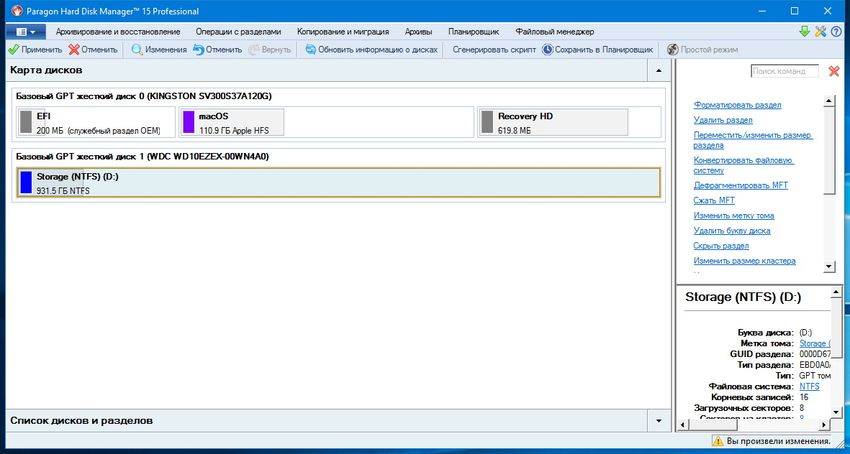
(Опционально) Измените схему на GPT, если это необходимо 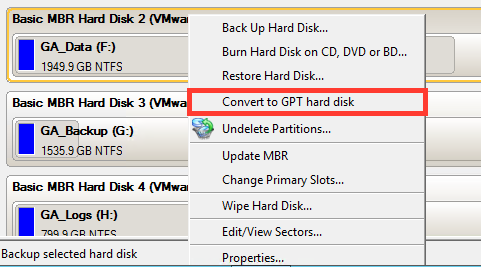
Измените размер раздела целевого диска. После изменения размера должна появиться незанятая область до или после раздела. Размер незанятого пространства равняется месту, выделяемому для macOS . Рекомендую выделить для macOS Sierra как минимум 30Гб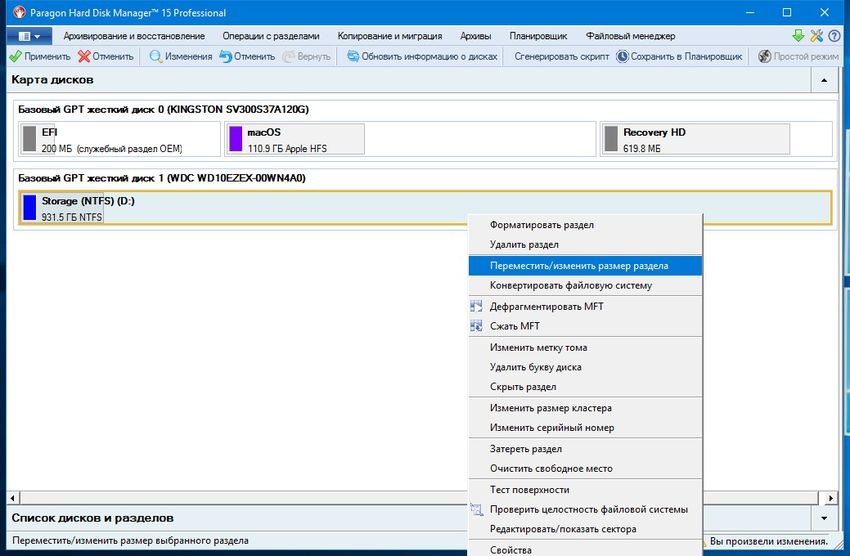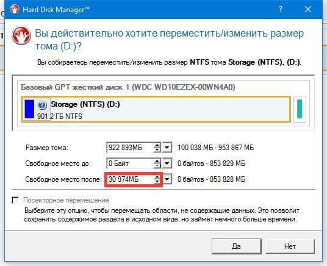
Создайте в неразмеченной области раздел FAT32 размером 200Мб, назовите его EFI и не назначайте ему букву
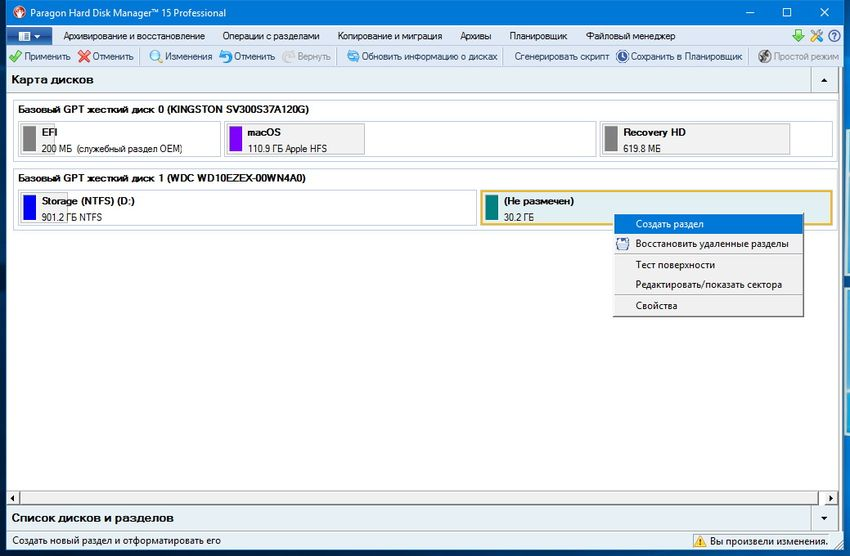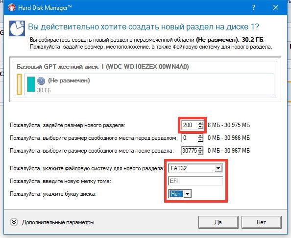
Оставшееся пространство разметьте в Apple HFS, назовите его любым именем на латинице (я назвал его macOS) и не назначайте ему букву
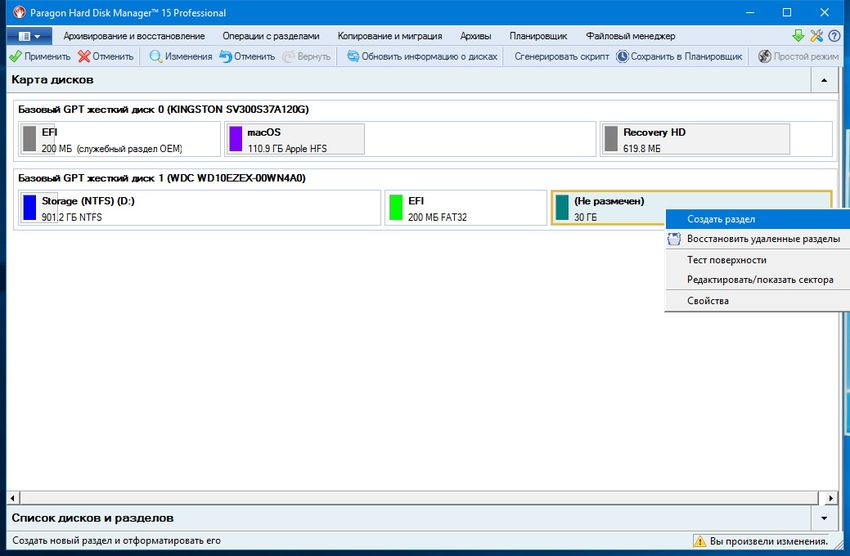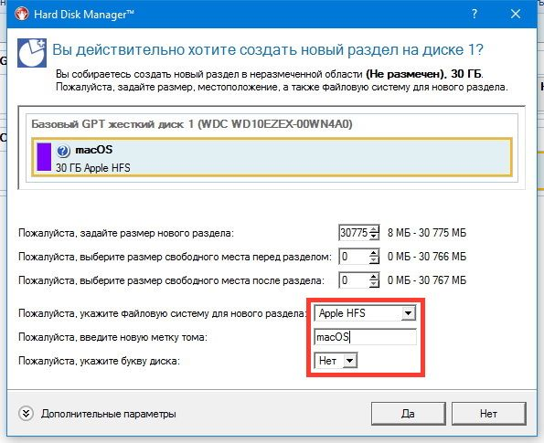
После того, как все шаги пройдены, внимательно проверьте свои действия и нажмите Применить - это запустит процесс применения всех указанных выше действий.
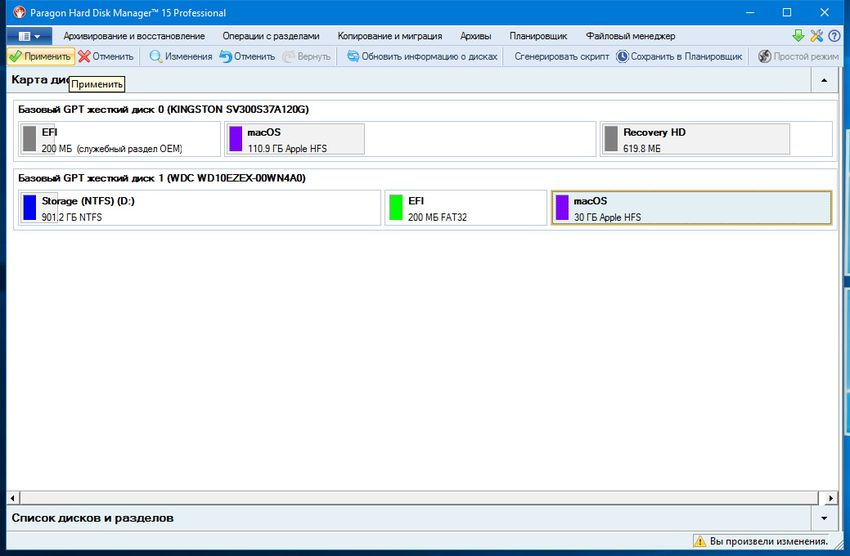
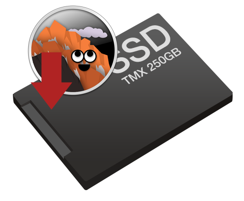
Шаг 5: Установка macOS Sierra на ПК
Вы почти закончили! Все, что осталось для установки - загрузиться с USB-накопителя и установить macOS! Для лучших результатов вставьте накопитель в разъем USB 2.0.
Включите компьютер
Загрузитесь с USB, выбрав соответствующий пункт в меню загрузки UEFI. Или предварительно выставите для этого загрузку с USB/CD-ROM в BIOS
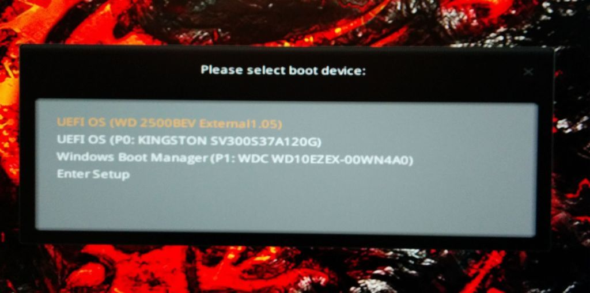
Должен появиться интерфейс загрузчика Clover. Запустите установку macOS Sierra с USB-накопителя. В моем случае - Boot Mac OS X from USB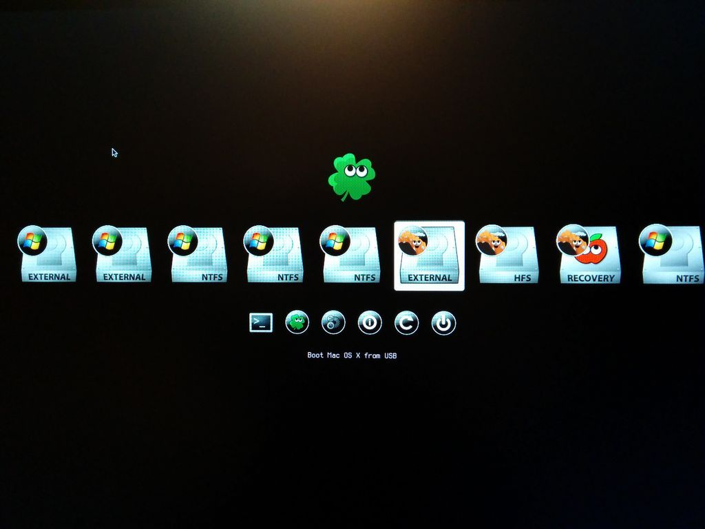
Когда увидете экран установки macOS, выберите необходимый язык системы
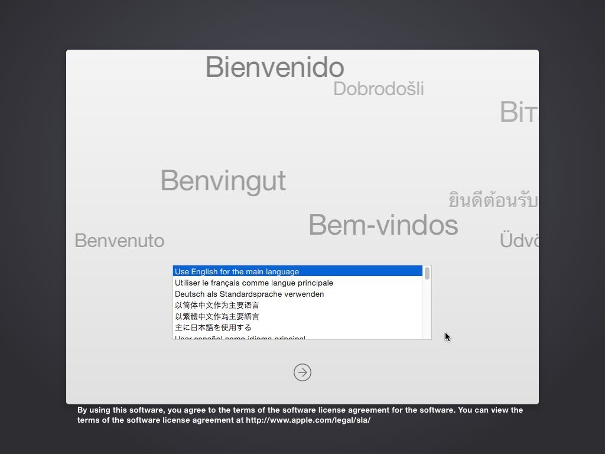
(Опционально) Для первичной установки macOS на ПК необходимо отформатировать целевой диск или пропустить данный этап, если заранее был подготовлен раздел для установки macOS в Подготовка жесткого диска.
В верхнем меню выберите Утилиты и откройте Дисковую утилиту
Выберите целевой жесткий диск в левой колонке
Нажмите кнопку Стереть
Введите имя на латинице, например, macOS (имя можно изменить позже)
Формат: OS X Extended (Журналируемый)
Схему разделов: GUID Partition Map (GPT)
Нажмите Стереть
Выйдите из Дисковой утилиты.
Когда установщик попросит выбрать место установки, выберите созданный раздел macOS
После завершения система будет автоматически перезагружена
Загрузитесь с USB-накопителя
На экране загрузчика Clover выберите раздел с установленной macOS Sierra. В моем случае - Boot MacOS from macOS
Завершите установку macOS Sierra
Шаг 6: Пост-установка с MultiBeast
Проверка загрузочного раздела (только для UEFI)
Рекомендую проверить созданный Вами (см. Подготовка жесткого диска) или установщиком (см. Установка macOS Sierra) EFI раздел. Для этого необходимо его смонтировать, поскольку разделы EFI по умолчанию скрыты для всех ОС.
Загрузите EFI Mounter и установите ее на macOS, распаковав утилиту и переместив ее в /Программы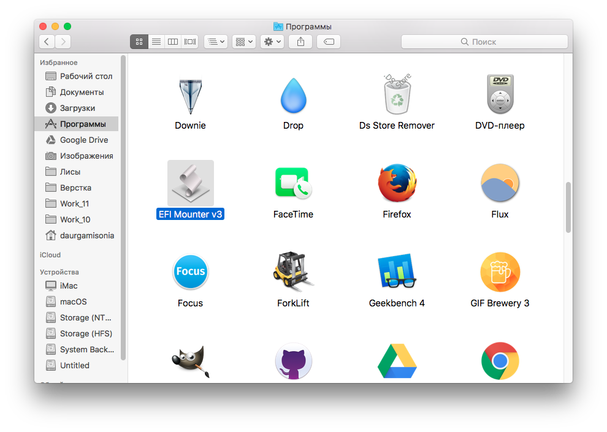
На сообщение системы безопасности отвечаем Открыть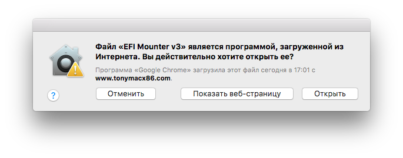
EFI Mounter обнаружит разделы EFI на всех жестких дисках и подключенных носителях. В моем случае, отображены 2 системных диска - SSD (твердотелый накопитель) и HDD (жесткий диск). SSD-диск указан как Disk0s1, где s1 - это первый раздел данного диска, который и является EFI - загрузочным разделом в UEFI. Выбираем нужный раздел и нажимаем Mount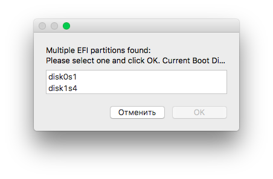
Подтверждаем выбор. В "проводнике" Finder в левой колонке к списку монтированных накопителей добавился EFI. Это и есть созданный Вами/системой загрузочный раздел!
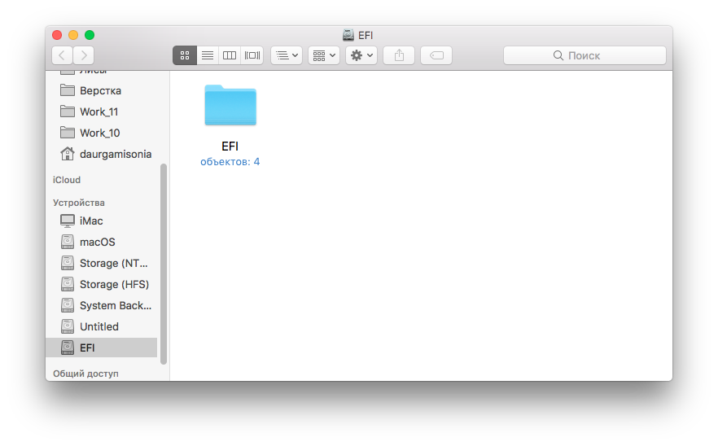
На приложенном скриншоте в разделе уже имеется директория EFI с загрузчиком Clover внутри нее. Но при первичной установке macOS на ПК этот раздел должен быть пустым. Если на разделе есть какие-либо файлы, то это могут быть данные для загрузки Windows, которых трогать не стоит! Вам может смонтироваться не тот загрузочный раздел EFI в следующих случаях:
Вы установили macOS на один жесткий диск с ОС Windows и по ошибке смонтировали EFI с файлами этой ОС
На целевом жестком диске по какой-либо причине вообще нет раздела EFI и смонтировался аналогичный раздел для Windows из другого физического диска
По ошибке подключился EFI-раздел с загрузочного USB
Настройка оборудования с помощью MultiBeast
MultiBeast - пакет программ "все в одном", который разработан упростить настройку macOS на ПК. В состав программы входит загрузчик Clover, кексты? для настройки оборудования и скрипты для настройки загрузчика. MultiBeast настроит загрузку macOS Sierra с жесткого диска, заместо того, чтобы всякий раз делать это с загрузочного USB. Кроме этого, MultiBeast поможет настроить встроенное аудио, сетевую карту, видеокарту и другое внутреннее оборудование компьютера. То есть основное отличие MultiBeast от UniBeast состоит в том, что UniBeast создает загрузочный накопитель для первичной установки macOS, тогда как MultiBeast создает загрузчик на жестком диске и настраивает как его, так и macOS под внутренее оборудование компьютера.
Каким образом работает MultiBeast:
В случае с UEFI-загрузкой, автоматически монтирует раздел EFI жесткого диска
По аналогии с созданном UniBeast загрузочном USB, MultiBeast создает директорию с загрузчиком Clover, но на EFI разделе жесткого диска
Устанавливает необходимые кексты? в системную папку macOS или папку загрузчика
Добавляет необходимые параметры в виде строк кода в файл конфигурации загрузчика Clover - config.plist
Выберите Quick Start. UEFI Boot Mode рекомендуем для систем на базе 7/8/9/100 серии чипсетов Intel и всех систем с UEFI загрузкой. Legacy Boot Mode рекомендуем для 5/6 серий и всех систем на базе BIOS
На вкладке Audio представлен список опций для аудиокодеков Realtek ALC. Материнские платы на чипсетах Intel как правило используют эти кодеки. Также представлены опции для звука, реализуемого посредством HDMI. Выберите подходящий вариант для своей системы, отметив только один пункт. Если в системе чипсет Intel 100-серии, то дополнительно отметьте и соответствующую опцию. Если так и не смогли определить свой аудио-кодек, то вероятно подойдет один из вариантов в группе Universal > VoodooHDA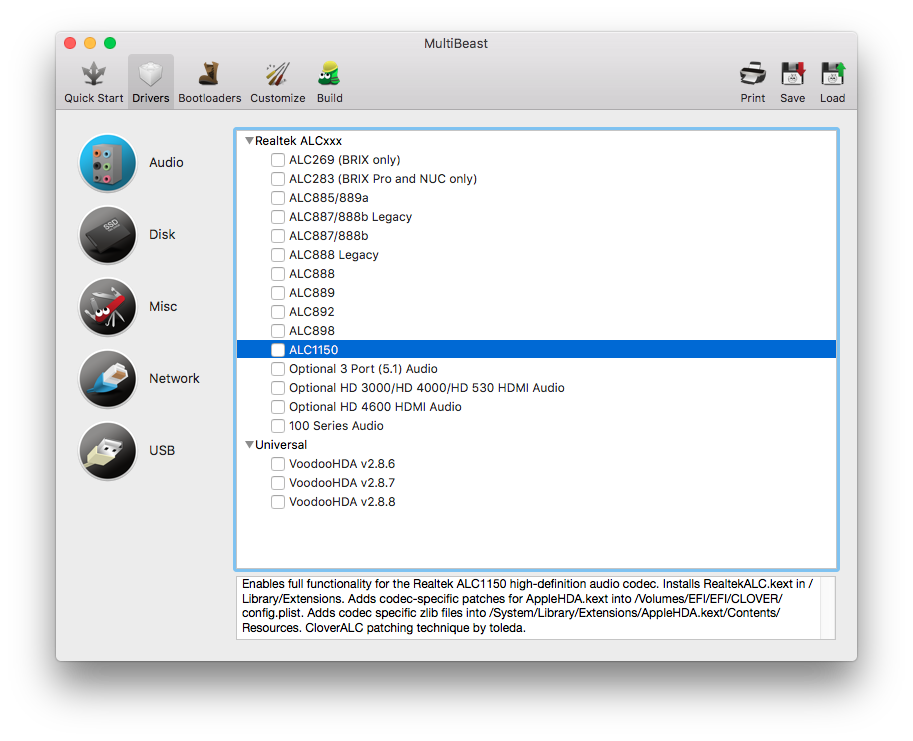
На вкладке Disc представлены опции для сторонних (3rd Party) SATA-контроллеров жестких дисков, а также Intel Generic AHCI SATA, которые подходят только для определенных чипсетов (см. описание)
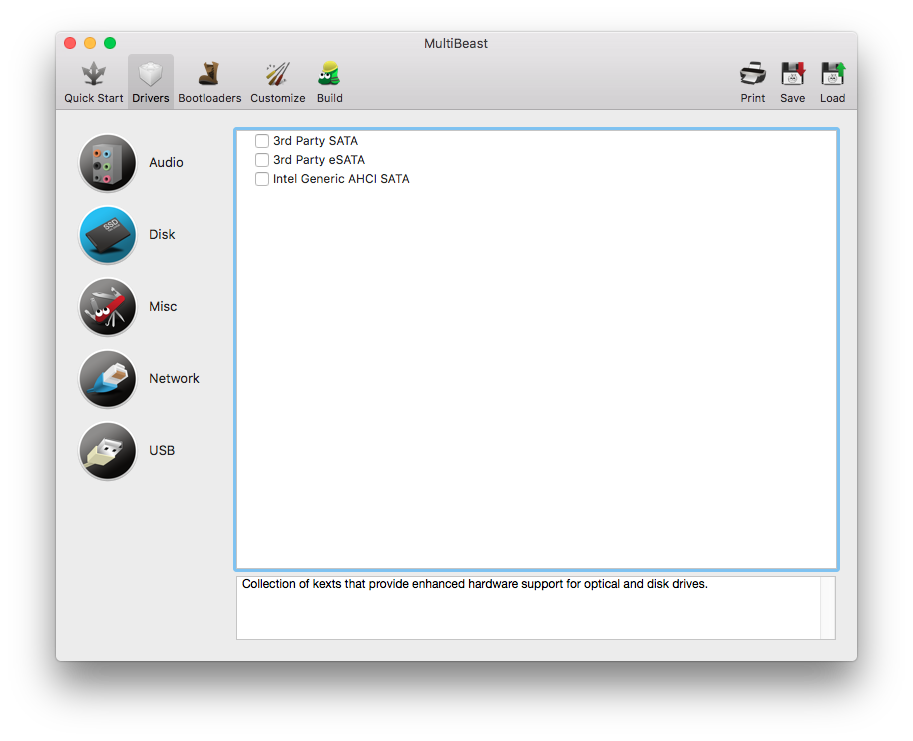
В Misc представлен важный для "хакинтошей" кекст FakeSMC, эмулирующий фирменную микросхему SMC?, установленную на материнских платах компьютеров Apple. Одна из подходящих Вашей системе опций должна уже быть отмеченной по умолчанию.
Кексты VoodooTSCSync предназначены только для процессоров c разъемом LGA2011
FakeSMC HWMonitor (прим.: возможная несовместимость с видеокартами Nvidia Pascal!) предназначен для получения данных о температуре оборудования и скоростях вращения систем охлаждения.
Переходим на вкладку Bootloaders и видим 2 пункта. Одна из подходящих опций уже должна быть отмеченной в соответствии с выбором на Quick Start
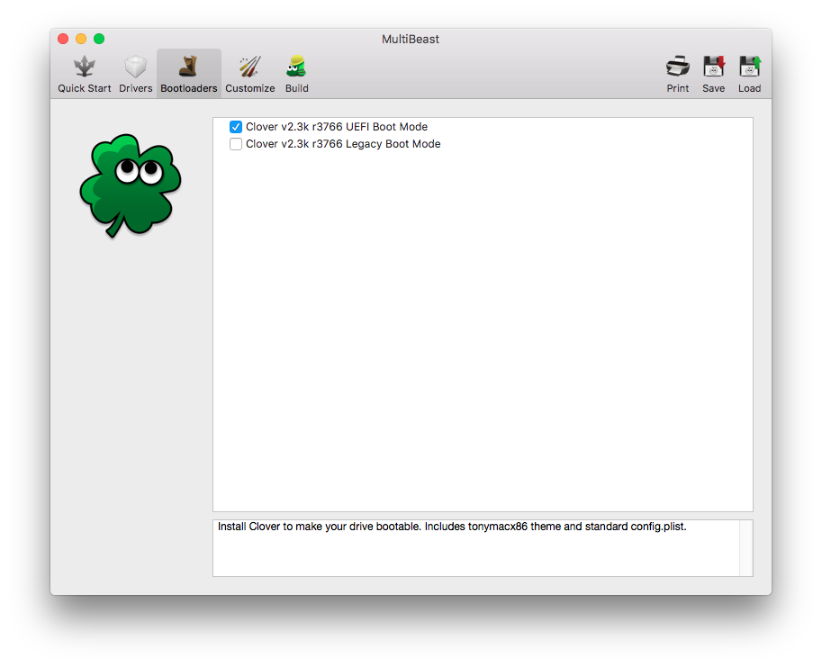
Вкладка Customize разбита на 3 раздела. Первый раздел - Graphics Configuration
Inject NVIDIA - опция для старых видеокарт NVIDIA GeForce серии 8xxx, 9xxx, 2xx, 4xx, 610 и 630
Inject ATI - для старых видеокарт ATI, таких как 4ххх серия
Раздел SSDT конфигурации содержит только опции для процессоров семейства Sandy Bridge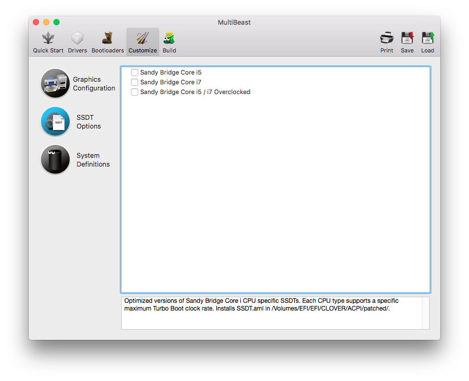
Раздел System Definitions содержит ряд опций, которые маскируют Ваш ПК под настоящий компьютер Mac, тем самым открывая доступ к почти всем сервисам Apple - iCloud и AppStore - а также нужны для нормальной работы macOS в целом. К счастью, Вам не придется выбирать подходящий системе вариант, так как он уже должен быть отмечен - раскройте списки и убедитесь в этом сами
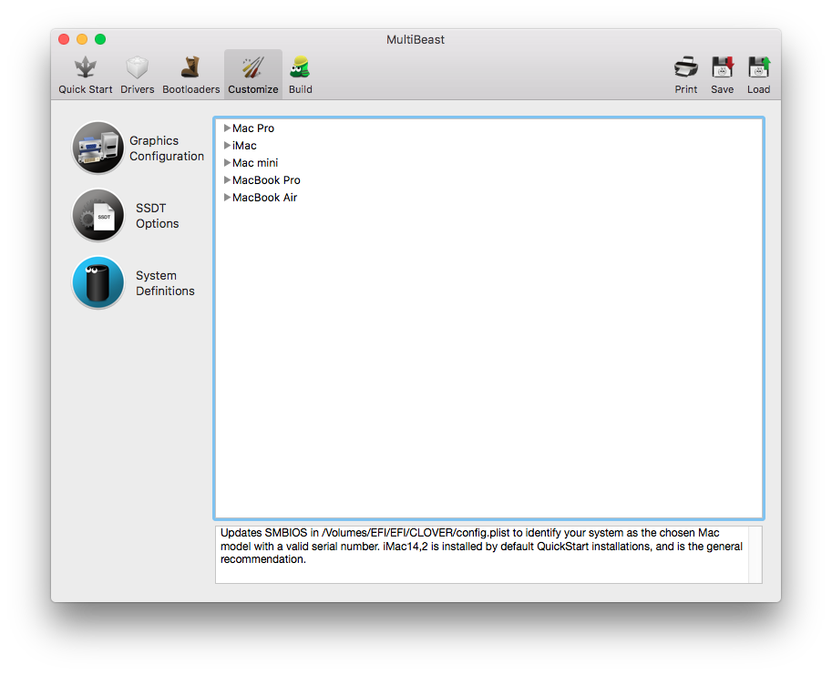
Нажмите Print или Save для создания резервной копий конфигурации, так как MultiBeast является установщиком, но не деинсталятором
Нажмите Build, затем Install.
Установка драйверов видеокарты
Если у Вас видеокарта GeForce GTX 7xx, 9xx, TITAN X или выше, то macOS Sierra не поддерживает их по умолчанию. Вам потребуются альтернативные драйвера Alternate NVIDIA drivers и утилита Clover Configurator для того, чтобы "прописать" эти драйвера в загрузчике Clover.
Загрузите последнюю версию Alternate NVIDIA Graphics Drivers для своей версии macOS и установите ( прим.: по ссылке версии для 10.12.3). Пока не перезагружайтесь
Найдите папку загрузчика Clover, созданную MultiBeast на жестком диске. Она должна располагаться на разделе EFI. Все подключенные разделы можно увидеть в левой колонке Finder (см. Проверка загрузочного раздела)
Откройте config.plist через Clover Configurator
В Clover Configurator перейдите на вкладку System Parameters и отметьте опцию NvidiaWeb
Сохраните изменения и закройте утилиту.
По окончании процедуры безопасно извлеките загрузочный USB и перезагрузите компьютер. Теперь Вы загрузитесь в macOS без USB. В вариантах загрузки UEFI должен появится пункт для загрузки с жесткого диска, на котором установлена macOS Sierra. На экране Clover выберите Boot MacOS from macOS.
В случае с Legacy загрузкой (BIOS), система должна быть настроена на загрузку с того жесткого диска, на котором установлена macOS.
Вжуух! И у Вас установлена и более-менее настроена (надеюсь) macOS Sierra!
Не стоит беспокоиться за то, что после перезагрузки что-либо не заработает: сложности при настройке хакинтоша - вполне закономерное явление...
О заводе сервисов AppStore и iCloud, а также о других сложностях, которые могут возникнуть, в частности проблемах со встроенным звуком, я расскажу в следующих обновлениях своего руководства.
Решение проблем
Unibeast: Volumes are Mounted
На конечном этапе создания загрузочного USB через UniBeast может появиться сообщение с заголовком "Volumes are Mounted". Это преграда, которая сделает невозможным дальнейшее продвижение по инструкции.
Решение:
Войдите в Finder, в строке меню выберите переход > переход к папке
Введите во всплывающем окне /Volumes и найдите в открывшемся списке раздел, имеющий отношение к macOS
Переименуйте его на что нибудь другое, например на Other OS X Base System
Закройте UniBeast и повторите всю процедуру создания загрузочного USB заново
Паника ядра
Если установка macOS на ПК прервется экраном с перечеркнутым кружком - это паника ядра - преграда, с которой сталкиваются многие люди, настраивающие хакинтош. Причин может быть много, однако в моем случае данная проблема сразу же возникала при попытке установке macOS Sierra на отдельный раздел жесткого диска (HDD) на системе с UEFI. Если Ваша ситуация во многом аналогична, вероятно, проблему поможет решить нижеследующая инструкция.
Экран паники ядра macOS. Точнее, один из его разновидностей...
Загрузитесь в Windows
Запустите настроенную в первой главе виртуальную машину с macOS
Подключите созданный UniBeast загрузочный USB
Откройте раздел EFI (он примонтируется как отдельный накопитель) и проследуйте по пути: EFI/Clover/driversolutions4uefi
Скачайте альтернативный файл OsxAptioFixDrv-64.efi и скопируйте его в папку driversolutions4uefi загрузчика Clover. Удалите из папки другие файлы, начинающиеся с названия "OsxAptioFix..."
Попытайтесь снова установить macOS Sierra.
Если вышеуказанный способ не помог, надо загрузиться в режиме вывода сообщений – Verbose mode:
Загружаемся в Clover
На загрузочном экране выделяем Boot MacOS from macOS
Нажимаем на Пробел и выбираем Boot Mac OS X in Verbose Mode
Экран должен заполниться информацией об ошибке, а Вам остается его сфотографировать и искать решение в сети.
Включение режима вывода информации (лога) в Clover - Verbose Mode
Темный экран при выходе из сна
При отсутствии изображения после пробуждения компьютера должна помочь следующая процедура:
Найдите папку загрузчика Clover. Она должна располагаться на разделе EFI. Все подключенные разделы можно увидеть в левой колонке Finder (см. Проверка загрузочного раздела)
Откройте config.plist через Clover Configurator
Перейдите на вкладку Boot и измените значение darkwake. Рекомендую выставить darkwake=8


{kind=link}

{kind=link}